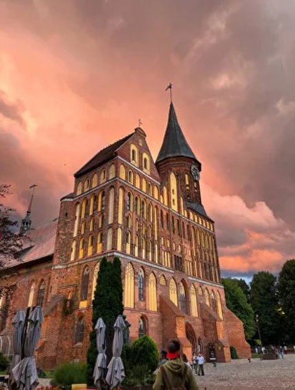

ГИД ПО КАЛИНИНГРАДСКОЙ ОБЛАСТИ
Подборка самых красивых мест Калининграда и области
поможет сделать ваше путешествие особенным
поможет сделать ваше путешествие особенным
О НАС
ПОМОЩЬ
ЗАБРОНИРОВАТЬ
8 (999) 99-99-99
Horizon Travel
Достопримечательности Калининграда
Культура нашего края сочетает в себе российские традиции и европейскую атмосферу. Отправиться за границу, не покидая России, – вот что значит посетить Калининград

Остров Канта
Рыбная деревня
Музей Мирового океана
Большинство туристических маршрутов начинаются с Острова Канта. Советую заглянуть в Кафедральный собор – здесь можно посетить органный концерт.
В пешей доступности находится Музей Мирового океана с впечатляющими пришвартованными кораблями.
С Острова Канта вы неизбежно попадете в Рыбную деревню. Рекомендую прокатиться на катере и прослушать увлекательную аудиоэкскурсию об истории Старого города.
Калининградская область
Советск и Неман
Два соседних города с уникальной историей. Именно в Советске (бывшем Тильзите) производили знаменитый сыр по старому прусскому рецепту. А невероятной красоты Мост Королевы Луизы, пролегающий через реку Неман, сегодня соединяет Россию с Литвой.Рекомендую заглянуть в старинную действующую сыроварню (телефон: +79316150164). Помимо прочего здесь находятся необычная кирха-спортзал и разрушенный замок Тильзит.
Черняховск
Город, в котором сохранилось много кирх.Когда будете гулять по Черняховску, обратите внимание на архитектуру города. Старые немецкие дома так и хочется разглядывать: необычные входные двери, окна причудливой формы и красочные витражи.Здесь можно найти даже замки XIV века, возведенные тевтонскими рыцарями!
Балтийск
В этом городе советую посетить Немецкое кладбище и Балтийскую косу. Про Немецкое кладбище знают немногие. Большинство людей эта локация ставит в ступор – зачем ехать на кладбище? Но это очень красивый парк, здесь на берегу моря можно увидеть танцующие сосны. Поверьте мне, это место стоит посетить! А на Балтийскую косу советую отправиться, в особенности, весной – там и пляжи с нетронутым песком, и развалины форта, уходящие в море, и необычное сочетание природы и былого военного величия.
ПОМОЩЬ
Правила посещения и бронирования
Политика конфединфиальности
Обратная связь
Памятка гостя
Политика конфединфиальности
Обратная связь
Памятка гостя
Забронировать
Услуги
Цены
Подарочный сертификат
Услуги
Цены
Подарочный сертификат
Horizon Travel
О КОМПЛЕКСЕ
Наша философия
СМИ о нас
Контакты
Программа лояльности
СМИ о нас
Контакты
Программа лояльности

© 2023 Horizon Travel
8 (999) 99-99-99
horizontravel.book@gmail.com
Гумерова Лилия Рамисовна